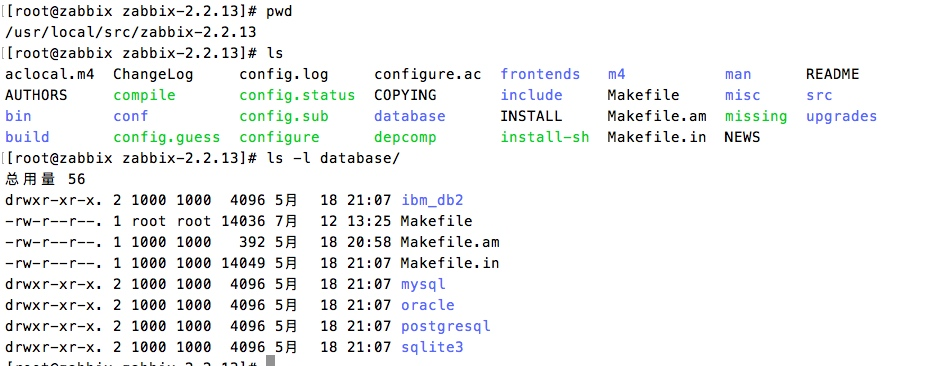

zabbix安装排错过程
在讲安装过程之前需要先把zabbix的工作流程简单的讲一遍：zabbix是个开源监控软件，通过web才能更直观的监控我们想要监控的主机，同时，zabbix从被监控主机获取到的信息需要存放在数据库中，因此zabbix+nginx/apache+php+mysql是常用的组合方式。nginx/apache提供web服务器，zabbix的web监控是由php写的，因此需要php环境，最后mysql提供存储。
mysql、nginx、php之前都说过如何编译安装，在此我就只讲编译参数了。
php:
./configure --prefix=/usr/local/php-5.5.0 --with-config-file-path=/usr/local/php-5.5.0/etc --with-bz2 --with-curl --enable-ftp --enable-sockets --disable-ipv6 --with-gd --with-jpeg-dir=/usr/local --with-png-dir=/usr/local --with-freetype-dir=/usr/local --enable-gd-native-ttf --with-iconv-dir=/usr/local --enable-mbstring --enable-calendar --with-gettext --with-libxml-dir=/usr/local --with-zlib --with-pdo-mysql=mysqlnd --with-mysqli=mysqlnd --with-mysql=mysqlnd --enable-dom --enable-xml --enable-fpm --with-libdir=lib64 --enable-bcmath --with-openssl --enable-mbstring
mysql:
cmake -DCMAKE_INSTALL_PREFIX:PATH=/usr/local/mysql -DWITH_MYISAM_STORAGE_ENGINE=1 -DWITH_INNOBASE_STORAGE_ENGINE=1 -DWITH_ARCHIVE_STORAGE_ENGINE=1 -DWITH_BLACKHOLE_STORAGE_ENGINE=1 -DWITH_MEMORY_STORAGE_ENGINE=1
nginx:
--prefix=/usr/local/nginx --with-http_ssl_module --with-http_stub_status_module --with-pcre
zabbix:
安装zabbix前需要修改php.ini的几个参数
max_execution_time = 300
memory_limit = 128M
post_max_size = 16M
upload_max_filesize = 2M
max_input_time = 300
date.timezone PRC
修改完毕可以开始编译安装zabbix了
./configure --prefix=/usr/local/zabbix/ --enable-server --enable-agent --enable-proxy --with-mysql --with-net-snmp --with-libcurl --with-libxml2
所有软件安装完毕后开始配置
1、mysql中添加zabbix数据库
在zabbix的源码目录下有个database目录，里面对应不同的数据库

我们使用的是mysql数据库，因此表结构从mysql中导入，一共有3个表，mysql，images和schema
create database zabbix character set utf8; grant all privileges on zabbix.* to root@'localhost' identified by '123'; mysql -uroot -pmysql zabbix < schema.sql #导入这三个表必须按照此顺序 mysql -uroot -pmysql zabbix < images.sql mysql -uroot -pmysql zabbix < data.sql
2、配置zabbix-server
vim /usr/local/zabbix/zabbix_server.conf
ListenPort=10051 LogFile=/tmp/zabbix_server.log PidFile=/tmp/zabbix_server.pid DBHost=localhost DBName=zabbix DBUser=root DBPassword=123 #这里要注意，密码不需要加引号，直接写就行，当时我加了引号，日志一直报错连接数据库失败，网上找了很久也没找到解决方法，后来自己多次尝试才发现了这个坑 DBPort=3306 DBSocket=/data/mysql3306/mysql.sock
到这边zabbix-server基本上配置好了，使用zabbix_server启动，zabbix_server启动不管成功与否都不会有返回值，因此启动完毕需要看一下10051端口开了没。下面说说client
你可以在一台主机上同时装server和client。编译时加上--enable-agent就是把client模块编译进去。
vim /usr/local/zabbix-2.2.2/etc/zabbix_agentd.conf
Server=127.0.0.1
ServerActive=127.0.0.1
Hostname=Zabbix server
使用zabbix_agentd启动，查看10050端口是否开启。
3、配置zabbix管理网站
cp -rp /usr/local/src/zabbix-2.2.13/frontends/php/* /www/zabbix
vim /usr/local/nginx/conf/nginx.conf
server { listen 80; index index.html index.php index.html; root /www; location /{ try_files $uri $uri/ /index.php?$args; } location ~ ^(.+.php)(.*)$ { fastcgi_split_path_info ^(.+.php)(.*)$; include fastcgi.conf; fastcgi_pass 127.0.0.1:9000; fastcgi_index index.php; fastcgi_param SCRIPT_FILENAME $document_root$fastcgi_script_name; } }
配置完毕启动nginx，浏览器输入localhost/zabbix即可在线配置zabbix的网页，配置完网页即可在网页上监控agent
提示：想要开启zabbix网页，nginx，php-fpm，mysql都要开启，缺一不可。